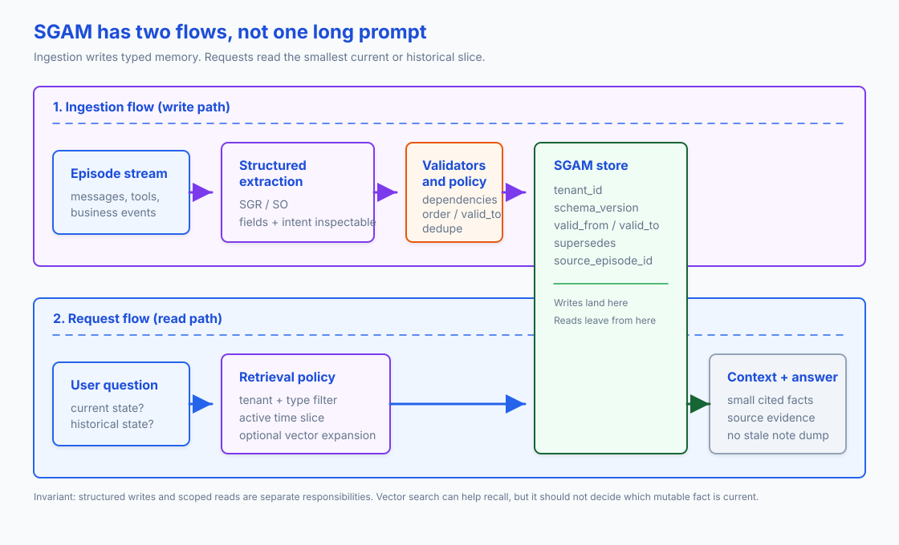

AI Agent Memory: Schema-Guided Typed State for Long-Running Systems
Long-running agents often retrieve stale facts because ordinary semantic memory has no rule for deciding which value is current.
Suppose Mira first gives a passport deadline of July 15, then corrects it to June 30. Vector search can retrieve both statements. A memory system must also record that the later value supersedes the earlier one.
TL;DR: Treat durable agent memory as typed application state. Extract memory candidates through a structured-output boundary, store records with tenant scope, validity windows, supersession, provenance, and schema versioning, then retrieve the smallest current slice on the read path. Use vector search for fuzzy recall, but don't treat its ranking as the authority for mutable facts.
The context-window trap
The context window is the input available to one model call. An application may carry messages into later calls, but the model doesn't decide which old facts remain true or who may see them.
Long-running agents need to remember preferences, task status, customer facts, tool decisions, compliance notes, and prior mistakes. The easy version is to append summaries or dump old notes into a vector store. That works until one of the remembered facts changes.
Now the agent has two passport deadlines, two preferred formats, or two project decisions. Semantic search may retrieve both. A summary may overwrite one. A long context may include the stale one next to the active one. These designs can recall text, but they can't enforce which value is current.
The contract has to answer concrete questions:
- What is true now?
- What was true on June 2?
- Who said it?
- Which tenant does it belong to?
- Which older fact did this fact replace?
- Can I delete or expire it?
Schema-Guided Agent Memory (SGAM) stores those answers as fields and relations instead of leaving them implicit in prose.
What SGAM means
Before defining the pattern, separate three terms that use similar names but operate at different layers.
Schema-Guided Dialogue (SGD) is the 2019 Google task-oriented dialogue dataset. Its schema describes service APIs, intents, and slots so a dialogue model can track state for services it has not seen before. It's useful precedent, but it deals with dialogue services rather than durable agent memory.
Schema-Guided Memory (SGM) is the research term used by Mei et al. in According to Me: Long-Term Personalized Referential Memory QA. The paper compares free-text Descriptive Memory (DM) with fixed-schema key-value memory items. The source information is the same; the representation changes.
In this article, I use Schema-Guided Agent Memory (SGAM) to mean an engineering pattern in which schemas govern writes, updates, retrieval, and deletion. The schema defines application state rather than merely formatting a note.
ATM-Bench shows why the representation matters. It uses roughly four years of personal data from emails, images, and videos. The questions require personal references, location, multiple pieces of evidence, and updates over time. Performance drops on the hard split, while SGM improves over DM because the retriever can address fields such as time, source, location, entities, and tags directly.
SGM versus DM answers a storage question: should memory remain free text, or should it use named fields? A production agent has another problem before storage. It must reason from an unstructured conversation to a proposed memory update. Schema-Guided Reasoning (SGR) defines that decision path: inspect the evidence, identify the subject and attribute, check whether the fact changes existing state, then produce a candidate write. SGAM applies the storage and lifecycle rules after that model call.
SGR is the write gate
Structured Output (SO) enforces the candidate object's shape. Schema-Guided Reasoning (SGR) goes further by encoding the steps and order the model must follow to reach that candidate. Schema-Guided Agent Memory (SGAM) takes over after the model call and manages the candidate as durable state.
I've written about SGR several times. The original vLLM and XGrammar article covered the mechanism. Later posts applied it to structured judges, planners and routers, and reproducible RAG rubrics. In each case, the schema described both the intermediate reasoning fields and the final decision. Structured Output made that schema binding during decoding.
A verdict, route, or plan usually expires with the current request. Another run may read a memory candidate days later or use it to choose a tool call. That longer lifetime demands storage rules that SGR doesn't provide.
SGR constrains one model call by defining its reasoning topology. For a memory write, the schema might require source evidence, a normalized subject and attribute, a comparison with current state, and only then the proposed update. Pydantic or JSON Schema describes that path. Provider-native Structured Output or a guided decoding runtime such as XGrammar prevents the model from skipping fields or returning a different shape.
This doesn't guarantee that the conclusion is correct. It makes the required decision path explicit and inspectable instead of accepting a final object with no account of how the model reached it.
SGAM decides what happens after that object exists. Should it be stored? Does it supersede an older fact? Which tenant can see it? Is it current or historical? Which source episode backs it?
All three use schemas, so they are easy to mistake for one mechanism. They operate at different layers: SO controls the generated shape, SGR defines the route from evidence to decision, and SGAM controls the persisted state.
| Dimension | SO | SGR | SGAM |
|---|---|---|---|
| Purpose | Return an object that conforms to a schema | Guide the model through a predefined reasoning path | Manage durable memory after the model call |
| Scope | One generated response | One reasoning and decision path in a model call | Records used between calls, sessions, and runs |
| Schema role | Defines output fields, types, and allowed values | Defines intermediate reasoning stages and final decision | Defines stored records, relations, and lifecycle |
| Enforcement | Constrained decoding blocks schema-invalid output | Uses SO to require each declared stage and final decision | Application validation, database constraints, and conflict rules |
| Lifetime | Current call unless the application stores the object | Reasoning trace is usually discarded after the decision | Persists until updated, expired, or deleted |
| Failure mode | Valid shape with the wrong meaning | Required steps are present, but reasoning may still be wrong | Stale, polluted, unscoped, or unauditable state |
On the write path, the sequence is:
SGR reasoning schema + Structured Output -> candidate write -> SGAM policy and persistence
SGR guides the model through the predefined extraction and decision path. Structured Output enforces that path and produces the MemoryDelta object. SGAM then applies tenant checks, conflict policy, validity windows, provenance, and retention before it commits the delta.
The following illustrative excerpt from memory_models.py defines the object passed from extraction to the SGAM write service:
from datetime import datetime
from pydantic import BaseModel, Field
class MemoryDelta(BaseModel):
tenant_id: str = Field(description="Isolation boundary, e.g. acme")
subject: str = Field(description="Normalized entity ID, e.g. mira")
attribute: str = Field(description="Property being updated")
value: str = Field(description="New value")
valid_from: datetime
source_episode_id: str
MemoryDelta captures what the model extracted. The SGAM write service still decides whether to reject, merge, or store it.
The two flows
SGAM has a write path and a read path. Only the write path mutates stored state. The read path selects records for the current request.
The ingestion flow is the write path:
- Capture a raw episode from messages, tool results, or business events.
- Extract typed candidates through structured output.
- Validate the schema and reject malformed writes.
- Reconcile conflicts, close stale facts, and keep provenance.
- Commit the record to the SGAM store.
The request flow is the read path:
- Start with the user question.
- Decide whether the question needs current state or point-in-time state.
- Filter by tenant, memory type, subject, attribute, and validity window.
- Add vector or graph expansion only if the exact state lookup is not enough.
- Assemble the smallest cited context for the model.

Read that diagram from left to right in two lanes. The top lane writes memory, and the bottom lane reads it. Both use the same store.
What belongs in a memory schema
A minimal SGAM record needs more than text.
tenant_id
memory_id
subject
attribute
value
memory_type
schema_version
valid_from
valid_to
supersedes_memory_id
source_episode_id
confidence
retention_policy
With these fields, a new passport deadline can close the previous deadline without erasing history. The same table can answer current and point-in-time queries, then trace the result to its source episode. schema_version supports migrations, while retention_policy tells deletion jobs what else they must remove.
RAG retrieves documents. SGAM maintains mutable state.
Vector search still belongs in the system for fuzzy recall, clustering, and expansion. But the current value of mira.passport_deadline should come from a scoped memory record, not whichever chunk happened to rank first.
A stale-fact example
Compare two representations of the same episodes: a DM baseline and an SGAM ledger.
e1: Mira prefers concise answers. Her passport deadline is 2026-07-15.
e2: Mira corrected the deadline. It is now 2026-06-30.
A DM baseline keeps both episodes as free text, so text search can return e1 because it contains the right words. SGAM extracts a typed fact from each episode, keyed by tenant, subject, and attribute. It should return e2 as current state and keep e1 for a historical query.
The following function is SGAM write-path code. It would live in a store module such as sgam_store.py. DM has no counterpart because it doesn't maintain one current row per attribute. Before the caller inserts a replacement, this function closes the current row:
def close_previous_fact(db: sqlite3.Connection, fact: MemoryFact) -> int | None:
row = db.execute(
"""
select fact_id
from memory_facts
where tenant_id = ?
and subject = ?
and attribute = ?
and valid_to is null
order by valid_from desc
limit 1
""",
(fact.tenant_id, fact.subject, fact.attribute),
).fetchone()
if not row:
return None
db.execute(
"update memory_facts set valid_to = ? where fact_id = ?",
(fact.valid_from, row["fact_id"]),
)
return int(row["fact_id"])
When e2 arrives, the function sets valid_to on the fact extracted from e1 to e2's timestamp. The caller then inserts the new fact with an open valid_to. DM has no equivalent update step, so the old text can still outrank the correction.
Running current and historical deadline queries against both representations produces different results:
Naive text memory:
returned episode: e1 -> passport deadline is 2026-07-15
SGAM current state:
mira.passport_deadline = 2026-06-30
valid_from=2026-06-03T10:00:00Z, source=e2
SGAM point-in-time state:
on 2026-06-02, mira.passport_deadline = 2026-07-15
In production, pair this transaction with structured extraction on the write path. The database transaction updates temporal validity. The model extracts a candidate fact but doesn't decide which stored row remains current.
Tooling map
Projects use several names for parts of this pattern: memory stores, context graphs, profiles, long-term stores, graph RAG, and stateful agents.
| Tool or framework | Main storage layer | Temporal handling | Schema mechanism | Practical niche |
|---|---|---|---|---|
| Zep / Graphiti | Neo4j, FalkorDB, Neptune, legacy Kuzu support | High | Pydantic entity and edge types, temporal edges, provenance | Temporal graph memory |
| LangGraph / LangMem | LangGraph stores, Postgres-backed stores | Medium | JSON stores plus Pydantic profile or collection extraction | Agent apps already built on LangGraph |
| Mem0 | Managed stack, Valkey / Redis / vector backends in OSS setups | Medium | Memory types, custom categories, extraction prompts | User, agent, and session memory as a service |
| Letta / MemGPT | Database-backed agent state and memory blocks | Low | Editable labeled memory blocks | Stateful agents with OS-style context management |
| Cognee | Graph plus vector and relational backends | Medium | Ontology-oriented extraction and validation | Enterprise knowledge graph memory |
| LlamaIndex property graph | Property graph stores plus vector stores | Low to medium | SchemaLLMPathExtractor with allowed entities and relations |
Graph extraction over documents and traces |
Graphiti is a concrete open-source implementation of relational, temporal memory. It tracks facts as they change, keeps pointers to source episodes, and supports hybrid retrieval. LangGraph separates thread checkpoints from cross-thread stores. Mem0 packages memory operations as a managed service. Letta uses editable context blocks rather than field-level SGAM, but it still treats agent state as persistent data.
Start with the data model. If exact fact lookup is the main operation, a relational table with JSON payloads, validity columns, tenant indexes, and a vector sidecar is usually enough. Add a graph when relationship traversal is part of the product, not because the graph demo looks impressive.
Implementation order
First decide what the product is allowed to remember. The graph-versus-vector choice comes later.
A support agent might remember account tier, open cases, and durable contact preferences. It shouldn't promote every frustrated aside into profile state. A coding agent might remember repo conventions and unresolved tasks. It shouldn't keep a private note forever because that note happened to be retrieved once.
Start with the write path and treat memory as a small state mutation:
- Name the memory type, subject, tenant scope, and retention class.
- Extract candidate records with structured output.
- Validate the payload with Pydantic or the schema layer your stack already uses.
- Resolve conflicts before insert, including whether the new record supersedes an old one.
- Keep a source pointer to the raw episode, tool result, file, ticket, or user confirmation that produced the record.
- Write the schema version with each record instead of leaving it only in application code.
The first SGAM store can be a relational table with a JSON column and a few indexes. A graph becomes useful when the product needs to traverse relationships such as customer-to-account, account-to-policy, task-to-artifact, or project-to-decision.
Hot path and background writes
Immediate extraction is worth it when the next turn depends on the new memory. If the user says "remember that I prefer short answers," the system should not need a nightly job before it behaves differently.
Most turns don't need an immediate write. Save the raw episode with tenant, session, and tool metadata, then let a background worker extract candidates later. With recurrence-based consolidation, the worker buffers weak signals and promotes a fact only after similar evidence repeats or the user confirms it. This adds freshness lag. That is acceptable for "user often asks for CSV exports" and risky for "customer changed the delivery address."
Keep the read path deterministic. Enforce tenant scope and validity first, then use fuzzy retrieval only when it can add useful context.
- Filter by tenant, memory type, and validity window.
- Retrieve exact structured state before semantic neighbors.
- Use vector or graph expansion for supporting evidence, related entities, and examples, not as the authority for current facts.
- Assemble the smallest cited context that can answer the question.
Treat schema migration as a product change because it alters what the agent can recall, cite, or delete. It can also change which historical facts count as current. Plan migration scripts, backfills, dual-read windows, and deletion behavior in the same release.
When SGAM is worth the complexity
Use SGAM when facts can change over time:
- user preferences that can be updated or revoked
- customer or account facts with audit requirements
- task state for long-running assistants
- coding-agent project memory
- multi-agent shared state
- compliance notes where provenance matters
- temporal questions such as "what did we believe before the migration?"
SGAM is overkill when memory is short-lived, exploratory, or cheap to recompute. If the agent only needs a few turns of continuity, a checkpoint and trimmed message history are enough. Static document QA may need only RAG. And if the domain is so unsettled that the schema changes every day, typed memory will slow the team down.
Evaluation checklist
Reading the final answer isn't enough. A memory system can produce a plausible response after it wrote the wrong fact, retrieved a stale one, or crossed a tenant boundary.
I use the same stage-by-stage split as my RAG evaluation article. Measure the stage where a failure can happen rather than limiting evaluation to the generated text. The trace discipline from the agent evaluation article also applies because a memory bug often appears in the run history before it reaches the answer.
I would test SGAM with replay. Feed a fixed sequence of episodes into the memory writer, inspect the ledger after each meaningful turn, then ask current-state and point-in-time questions against the resulting store.
| Layer | Failure you are looking for | Measures |
|---|---|---|
| Write extraction | The agent missed a fact, invented one, or produced invalid shape | Schema-valid write rate, extraction precision/recall, source episode coverage |
| Conflict handling | A stale fact stayed current or a valid old fact was overwritten | Supersession correctness, duplicate rate, stale-fact invalidation correctness |
| Isolation and policy | Memory leaked between users or survived past its policy window | Tenant isolation failures, deletion correctness, retention compliance |
| Read retrieval | The right record exists but the reader did not fetch it | Current-state accuracy, point-in-time accuracy, recall@k over memory records |
| Answer grounding | The answer used memory without support or cited the wrong source | Claim support against source episodes, citation accuracy, conflict-resolution correctness |
| Operations | The memory path is too slow, too stale, or too expensive | p95 write latency, freshness lag, read latency, cost per query |
Benchmarks such as LoCoMo, LongMemEval, and ATM-Bench provide public test cases. They don't replace a domain test suite. A coding assistant, customer support bot, and compliance copilot need different schemas, filters, retention rules, and failure tests.
Caveats
SGAM is my label for a pattern, not a standard. Existing projects divide the problem differently. LangGraph memory and LangMem describe short-term and long-term stores, profiles, collections, hot-path writes, and background memory managers. Zep Graphiti uses the term temporal Context Graph. Letta persists editable memory blocks, while Mem0 offers a managed memory layer. Microsoft GraphRAG, LlamaIndex property graphs, and Cognee frame related parts of the problem as knowledge graphs.
A user profile, an episode log, a document graph, and an agent-editable memory block solve different retrieval and update problems. I reserve SGAM for durable memory that represents current application state and therefore needs schema, validity, provenance, conflict handling, retention, and migration.
Typed memory can still be wrong. A schema makes bad writes easier to inspect; it does not make them trustworthy. You still need source trust, user confirmation for sensitive facts, conflict policy, deletion, and monitoring.
Schema migration is work. Once memory becomes state, you own versioning, backfills, old records, and deletion behavior. Skip that work and old records will outlive the semantics or retention policy that created them.
Key takeaways
- The context window provides input for the current turn. Durable agent memory needs a separate state contract.
- SGR defines the reasoning path to a candidate write, Structured Output enforces it, and SGAM manages the record after commit.
- Vector recall is useful, but current facts need scope, validity, supersession, and provenance.
- Start with a simple relational or JSON-backed memory ledger before reaching for a graph.
- Evaluate memory by write correctness, temporal retrieval, grounding, tenant isolation, and deletion behavior.
References
- According to Me: Long-Term Personalized Referential Memory QA - Mei et al. paper introducing ATM-Bench and Schema-Guided Memory.
- Towards Scalable Multi-Domain Conversational Agents: The Schema-Guided Dialogue Dataset - Rastogi et al. paper on the SGD dataset.
- LongMemEval: Benchmarking Chat Assistants on Long-Term Interactive Memory - Wu et al. benchmark for long-term memory abilities.
- Graphiti: Build Temporal Context Graphs for AI Agents
- Zep: A Temporal Knowledge Graph Architecture for Agent Memory
- Mem0 Platform Overview
- Mem0: Building Production-Ready AI Agents with Scalable Long-Term Memory
- LangGraph Memory Overview
- LangGraph Persistence
- LangMem documentation
- Letta: Introduction to Stateful Agents
- Microsoft GraphRAG documentation
- LlamaIndex: Using a Property Graph Index
- Cognee Documentation
- Pydantic model validation docs
- Python sqlite3 documentation